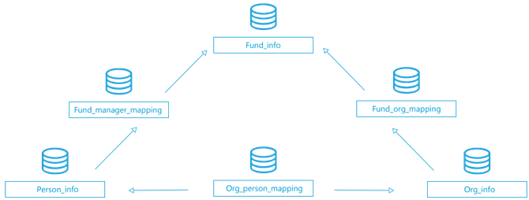

中国公募基金数据库（CMFDB）是私募云通完全自主研发、自主构建的数据库，包括基金产品信息库、机构信息库与投资经理信息库。最早的产品数据可追溯到1998年，详细收录了基金基本信息、分类、基金净值与分红、基金投资组合信息、基金财务报表、机构信息及投资经理信息。
中国公募基金数据库
申请试用
截止：--
--
公募产品
--
基金公司
--
基金经理
数据库结构

公募基金数据总计50张表
-
基本信息类数据
fund_info(基金信息表)
包括基金名称、成立事件、申购状态等基本信息。
person_info（基金人员信息表）
包括姓名、性别、履历等人员基本信息。
org_info（机构信息表）
包括机构名称、机构类型、成立日期、地址等基本信息。
-
延伸信息数据
fund_description（基金描述信息表）
包含基金投资目标、投资范围等信息。
fund_fee（基金费率表）
包含基金申购费、认购费等费率信息。
fund_info_structured（母子基金关联表）
包含分母子基金结构信息、亏损临界点、保收益临界点等信息。
fund_announcement（基金公告表）
包含基金公告日期、公告类型、公告内容等信息。
fund_asset_scale（基金资产规模表）
包含基金总份额、总资产等信息。
fund_portfolio_asset（基金资产配置表）
包含基金一级、二级资产类别的配置信息与金额。
fund_portfolio_industry（基金行业配置表）
包含基金配置的行业、资产类别、行业占比等信息。
fund_position_stock（基金持股明细表）
包含基金持有的股票、持仓数量、金额、占净资产比例、占流通市值比例等信息。
fund_position_bond（基金持债明细表）
包含基金持有债券、持仓数量、金额、占净资产比例等信息。
fund_holder（基金持有人结构表）
包含持有者类型、持有份额、持有比例等信息。
fund_balance（基金资产负债表）
包含基金银行存款、结算准备金、股票投资、债券投资等资产负债信息。
fund_income（基金利润分配表）
包含基金收入合计、利息收入、股票投资收益、债券投资收益等利润信息。
org_asset_scale（机构资产规模表）
包含基金公司总净资产规模、旗下基金数量等信息。
org_portfolio_asset（机构资产配置表）
包含机构资产类别以及类别资产金额信息。
org_portfolio_industry（机构行业配置表）
包含机构配置行业类别、类别金额、占净比等信息。
org_position_stock（机构持股明细表）
包含机构持有股票、持仓数量、金额、占净资产比例等信息。
org_holder（机构持有人结构表）
包含持有者类型、持有比例、持有份额、总持有规模等信息。
org_shareholder（机构股本股东表）
包含股东名称、总数、股本数量、持股数量、持有比例等信息。
-
基金净值
fund_nv（基金净值数据表标准）
包含经私募云通优选过的基金净值数据。
fund_nv_source（基金净值数据表多源）
包含多种信源获取的基金净值数据。
fund_yield（基金万份收益表）
包含基金万份收益及七日年化收益信息。
fund_dividend_split（基金分红拆分表）
包含基金权益登记日、红利发放日、税后红利等信息。
fund_split（基金拆分表）
包含基金拆分日期、拆分比例信息。
fund_divident（基金分红表）
包含基金分红日期、分红比例信息。
-
关系表
fund_manager_mapping（基金与基金经理关联）
包含基金与历任管理基金的基金经理信息。
org_person_mapping（基金人员与机构关联）
包含人员与机构任职信息，如职位、职责等等。
fund_org_mapping（基金与机构关联）
包含基金与管理机构、托管机构、顾问管理机构的关系信息。
-
基金分类
fund_type_mapping（基金产品分类明细）
包含基金按投资标的、投资方式等多维的基金分类信息。
fund_type_mapping_source(基金产品分类明细多源表)
包含从不同信源上获得的基金按不同方式分类的分类信息。
-
公募业绩指标
fund_daily_return（基金日度收益指标表）
包含基金日度的收益类指标信息。
fund_daily_risk（基金日度风险指标表）
包含基金日度风险类指标信息。
fund_daily_subsidiary（基金日度附属指标表）
包含基金日度的附属指标表，比如择时、跟踪误差、连续上涨日数等。
fund_weekly_return（基金周度收益指标表）
包含基金周度的收益类指标信息。
fund_weekly_risk（基金周度风险指标表）
包含基金周度风险类指标信息。
fund_weekly_subsidiary（基金周度附属指标表）
包含基金周度的附属指标表，比如择时、跟踪误差、连续上涨日数等。
fund_monthly_return（基金月度收益指标表）
包含基金月度的收益类指标信息。
fund_monthly_risk（基金月度风险指标表）
包含基金月度的风险类指标信息。
fund_monthly_subsidiary（基金月度附属指标表）
包含基金月度的附属指标表，比如择时、跟踪误差、连续上涨日数等。
fund_daily_subsidiary（基金日度附属指标表）
包含基金日度的附属指标表，比如择时、跟踪误差、连续上涨日数等。